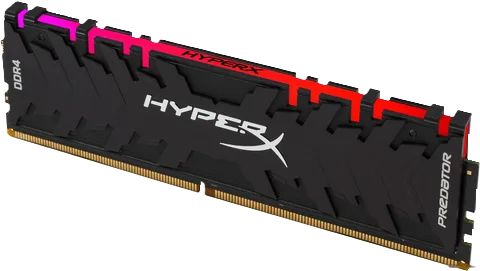

Оперативная память - Это временное хранилище, в котором содержатся непосредственно те данные, которые нужны для работы программ или игр, когда компьютер функционирует. В большинстве современных ПК озу представляет собой планки памяти с полупроводниковыми схемами.

Скорость - Скорость оперативки важна для процессора, которому нужен доступ к большому количеству данных, которые можно быстро передавать. Процессоры на самом деле имеют свою собственную эксклюзивную высокоскоростную память, называемую кэш, но она доступна только в небольших количествах
SRAM/DRAM
Виды оперативнной памяти - Оперативная память бывает статической (SRAM) и динамической (DRAM). Первая имеет высокую скорость реагирования и, соответственно, цену, вторая является компромиссным вариантом, поэтому используется для массового производства. DRAM, в свою очередь, делят на несколько типов: от DDR до DDR4. Цифра после букв означает поколение «оперативки»: чем больше цифра, тем моложе и лучше ОЗУ.
Тайминги - это набор параметров, которые определяют, насколько быстро модуль оперативной памяти может получать доступ к данным и доставлять их. Тайминг оперативной памяти устанавливается производителем и определяется в спецификациях устройства. Они сказываются на эффективности оперативной памяти и могут повлиять на скорость работы системы.